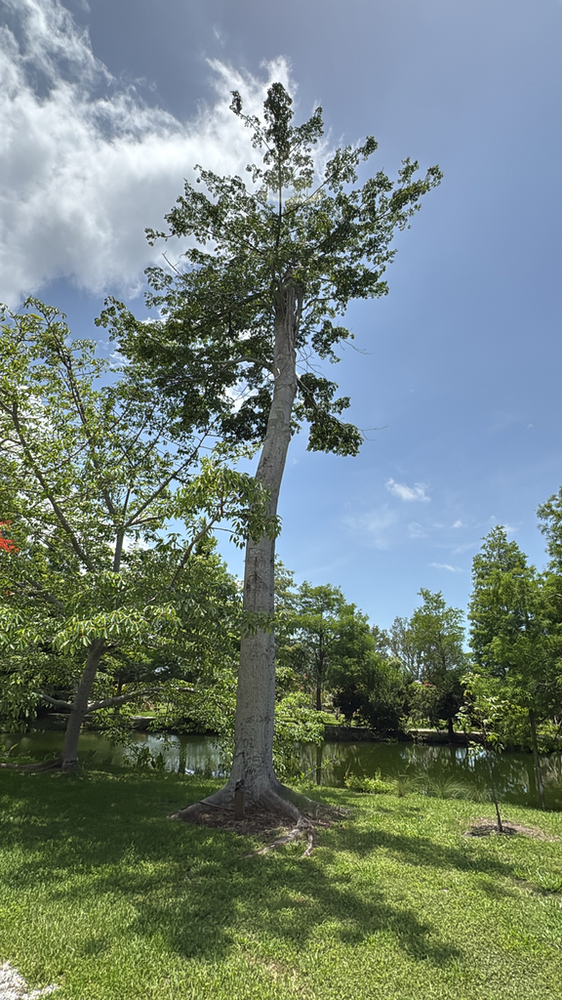

- The fiber stuffed inside the seed pods is hollow, making it buoyant and water-resistant. It was the primary filling for life jackets used by the US Navy through both World Wars before synthetics replaced it.
- Flowers open at night on bare branches and are pollinated by bats. The pungent scent they release after dark is engineered for bat navigation, not human appreciation.
- Sacred to the Maya as the World Tree — roots in the underworld, trunk in the human world, canopy in the heavens. The tree appears in temple carvings across southern Mexico and Guatemala. In West Africa, where it is also native, it held similar spiritual significance and was planted in village centers as a gathering place.
- Hurricane Milton took the top third of this tree in October 2024. That third was found in the cypress pond. Months later, leaves began pushing from the remaining trunk. The canopy is coming back.
Non-native to Florida. Native to Mexico, Central America, the Caribbean, and northern South America. Also native to West Africa — one of the few trees with original range on two continents. Member of Malvaceae, subfamily Bombacoideae — same subfamily as the Silk Floss Tree and Baobab growing nearby.
- Hurricane Milton made landfall near Siesta Key in October 2024 and hit the park hard. The top third of the Kapok came down and was found in the cypress pond when staff came to assess the damage. That section had carried the tree's canopy and the horizontal branching that defines a mature Kapok silhouette. It was a significant loss.
- Months later, leaves began emerging from the remaining trunk. The tree is not done. The canopy is slowly re-establishing from what remained, and given the Kapok's growth rate — up to 13 feet per year under good conditions — it will recover.
- Before Milton, an osprey used the upper canopy as a regular breakfast location. Staff working the canna lilies below would find fish bones landing on them. Looking up, the osprey was reliably there, having taken a tilapia from the large pond and retired to the Kapok to eat. That particular dining arrangement may or may not resume as the canopy grows back.
- The tree stands at the left end of a row of three spiny-trunked relatives: Kapok, then two Red Silk Cotton Trees, with the Baobab nearby — all members of the same subfamily, Bombacoideae. It is a good spot to compare the family resemblance.
Bat-pollinated — flowers open at night on bare branches and emit a pungent scent that attracts nectar-feeding bats. Moths also visit. The nocturnal pollination system is the norm for this subfamily; the Silk Floss Tree and Baobab nearby share the same basic arrangement.
The seed pods release masses of silky kapok fiber that carries seeds on the wind. Birds collect the fiber for nest lining. The large horizontal branching of a mature Kapok provides nesting platforms for raptors — the osprey that used the pre-Milton canopy as a feeding perch is the local example.
As an emergent tree in tropical forest — capable of reaching 200 feet, standing above the canopy — Kapok is a keystone species supporting an entire vertical community of birds, mammals, epiphytes, and insects in its native range.
White to pale pink, appearing on bare branches in late winter before leaf flush. Open at night and close by midday. Pungent scent attracts bats and moths. Not ornamentally showy but an important ecological event.
Ellipsoid woody capsules 3 to 6 inches long. Each contains up to 200 seeds embedded in silky kapok fiber. A single tree can produce up to 4,000 pods per season. Fiber is hollow, buoyant, and water-resistant.
Palmate compound, with 5 to 9 long narrow leaflets radiating from a central point. Deciduous — drops leaves during dry season, which is when flowering occurs.
Massive, buttressed at the base with wide spreading roots. Large conical spines on trunk and major branches. Horizontal branching creates a distinctive pagoda-like crown silhouette on mature trees.
The spiny trunk is visible year-round and immediately distinguishes it from the adjacent Red Silk Cotton Trees, which share the same growth form. The horizontal branching pattern is the mature tree's signature. In late winter, watch for flowers on bare branches before the leaves return.
The seeds, seed oil, and young leaves and flowers are all edible with cooking in some cultures, but it isn't grown as a food plant here.
It isn't toxic, though the fluffy kapok fiber can irritate the airways if a lot is inhaled during processing.
It isn't listed as toxic to dogs or cats.
NOMENCLATURE: Kapok was historically placed in Bombacaceae, now part of Malvaceae (subfamily Bombacoideae); same genus as the park's Silk Floss Tree, Ceiba speciosa.


- © Randall Carter (CC-BY-NC), via iNaturalist
- © Ruby Meador (CC-BY-NC), via iNaturalist